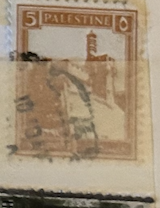
| SOURCE | TITLE| IMAGE MATCH | click to source page |
| eBay | California Mount Bullion 1931 4e-bar 1862-1955. | eBay | 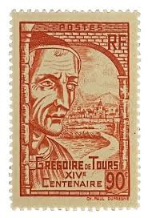 |
| eBay | NEW ZEALAND GOVT LIFE DEPT 1987 Lighthouse values used on parcel tag.......B7701 | eBay | 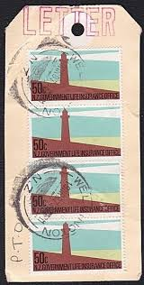 |
| Amazon.in | Mahaphilla India 2005 150 Years of Indian Post : Letter Boxes Se- Tenant Set of 4 Stamps Sheet for Stamp Collection Multicolor : Amazon.in: Office Products | 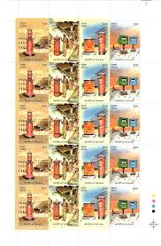 |
| eBay | Travelstamps: 1939 France Stamps Scott #389 St. Gregory of Tours Mint MNH OG | eBay | 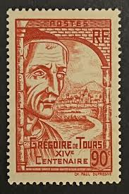 |
| eBay | LIGHTHOUSE - GERMANY - DDR COVER, VF | eBay | 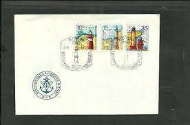 |
| Pin by Pablo Pablo on Faros - Lighthouse // Estampillas | Old postcards, Postal stamps, Lighthouse | 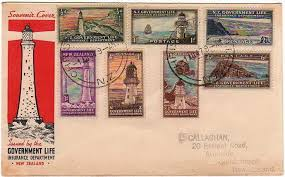 | |
| Etsy | Vintage #10 Envelopes Unused - Etsy | 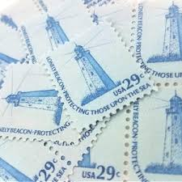 |
| Todocolección | madagascar 2015 spd fdc libellules dragonflies - Buy Antique stamps of Madagascar on todocoleccion | 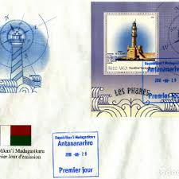 |
| Carousell | New zealand life insurance stamps block MNH surcharged, Hobbies & Toys, Memorabilia & Collectibles, Stamps & Prints on Carousell | 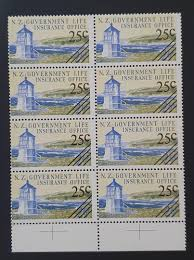 |
| eBay | 1941 New Zealand #Oy29-31,#33-36 FDC(?); lighthouse topical *d | eBay | 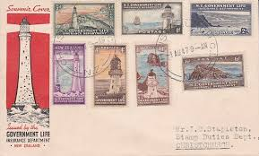 |
| eBay | FDC AF62 Gibraltar 1970 Europa Point 1v | eBay | 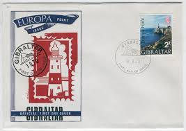 |
| Etsy | Vintage Light House Used Postage Stamps All Different -us-uk-germany-japan-france for Stamp Collectors, Crafting, Scrapbooking... - Etsy | 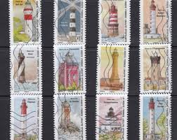 |
| Stamp Auction | Daniel F. Kelleher Auctions, LLC Sale - 755 Page 24 | 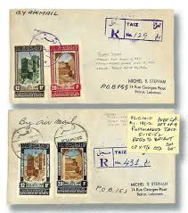 |
| New Zealand 1947 government life insurance cover stamps | 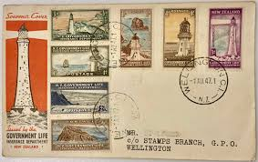 | |
| eBay | S24256) BRÉSIL 1999 MNH** 2 Ensembles Complets 2V | eBay | 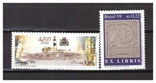 |
| Dreamstime.com | 114 Potter Letter Stock Photos - Free & Royalty-Free Stock Photos from Dreamstime - Page 2 | 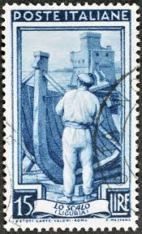 |
| eBay | Argentina #171 Centenary Trial Color Large Die Proof w/o Denomination 1910 LH | eBay | 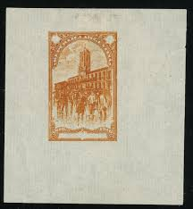 |
| eBay | Germany, Postage Stamp, #2629 (7 Ea) Used, 2011 Lighthouse (AC) | eBay | 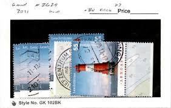 |
| eBay | GUERNSEY 1969 complete postage due set mint** $ 47.00 | eBay | 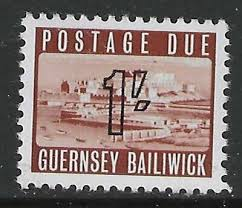 |
| Te Ara Encyclopedia of New Zealand | 1947 Government Life Insurance stamp issue | Lighthouses | Te Ara Encyclopedia of New Zealand | 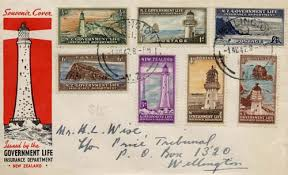 |
| eBay | NEW ZEALAND GOVT LIFE PARCEL LABEL $3.30 RATE PMK WELLINGTON (ID:22/D21283) | eBay | 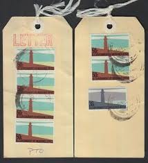 |
| HipStamp | Browse Auctions in British Commonwealth / HipStamp | 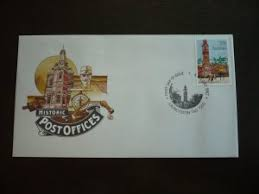 |
| Palo Albums | Lighthouses - Palo Albums | 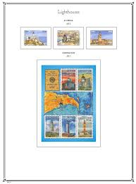 |
| eBay | GERMANY - DDR - GDR, BERLIN 1975 - 2 complete Sheets - Lighthouses - USED | eBay | 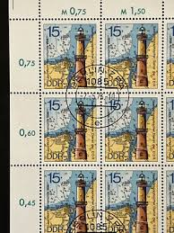 |
| Etsy | Djibouti Mosque Vintage Stamp Art: Framed Africa Wall Decor - Etsy | 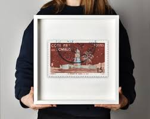 |
| eBay UK | Arras Vignette France Poster Stamp SNCF Societe Nationale Des Chemins De Fer FRA | eBay UK | 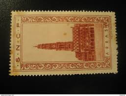 |
| eBay | NEW ZEALAND GVLI 1947 FDC (JF) G.I.284A. | eBay | 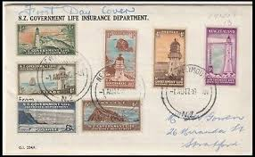 |
| eBay | Russia (B117-B118) 1978 22nd Olympic Games, Moscow (Tourism - Pereslavl) FDCs | eBay | 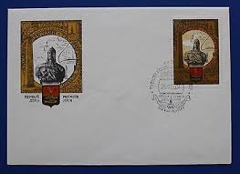 |
| New Zealand. 1967-1978 Government Life Insurance Office Stamps | 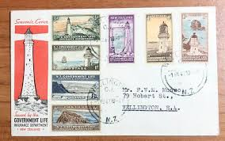 | |
| eBay | Italy Somalia n.173 cv 840$ SUPER CENTERED Pittorica perf 12 MH* | eBay | 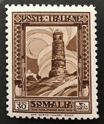 |
| Difference in South Carolina quarter stamp? | 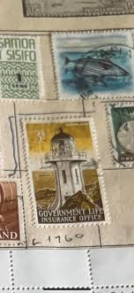 | |
| eBay | C) 1944 REPUBLIQUE OF SYRIENNE, MULTIPLE STAMPS, AIRMAIL, CIRCULATED COVER TO US | eBay | 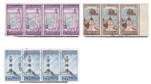 |
| eBay | Communication Postage Russian & Soviet Union Stamps for sale | eBay | 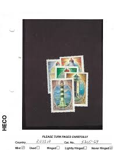 |
| Commonwealth-stamps.com | Commonwealth-stamps.com | Stamps | Country | New Zealand - Life Insurance Dept | 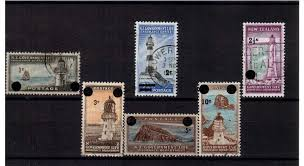 |
| eBay | Stamps New Zealand, FDC Government life insurance department. 1947 | eBay | 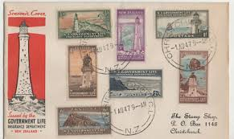 |
| eBay | 1979 New Zealand SEA SHELLS Stamps First Day Cover FDC C4659 | eBay | 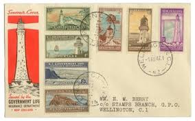 |
| Blogger.com | 1947 Government Life Insurance Lighthouses | 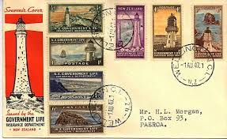 |
| eBay UK | 7p Denomination Great Britain Elizabeth II Pre-Decimal Stamps (1952-1971) for sale | eBay UK | 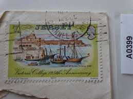 |
| eBay | Somali Coast Sc266 Djibouti Mosque, Architecture, Die Proof | eBay | 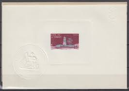 |
| eBay | Germany, Postage Stamp, #2152 (2 Ea) Used, 2002 Ecksberg Handicapped (AF) | eBay | 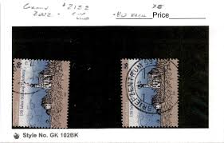 |
| Etsy | Guiding Lights of the Baltic - Vintage USSR Lighthouse Stamps (1980s) - Etsy New Zealand | 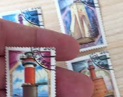 |
| eBay | China Taiwan 2018 特663 #663 Light House Stamp BARCODE | eBay | 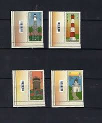 |
| eBay | Belgium Hb 2 1930 Exposition Philatelic Of Anvers, Od, US Made, Gi Issue, Used | eBay | 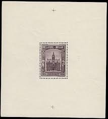 |
| eBay | SOMALIA IT. 1932 Mnara Tower MLH-VF # Sass. 173 perf.12 | eBay | 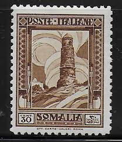 |
| eBay | BELGIUM 1936, BORGERHOUT CITY HALL, Scott B178 SOUVENIR SHEET, MNH | eBay | 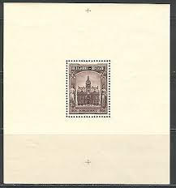 |
| eBay | Vintage 1916 Saint Amand on Puisaye Postcard Le Chateau des Gaborets | eBay | 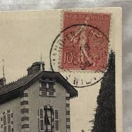 |
| eBay | French Used WWII Stamps for sale | eBay | 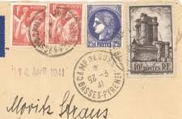 |
| eBay | USA5 #1437 MNH PB4 San Juan | eBay | 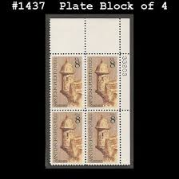 |
| Etsy | Luces guía del Báltico - Sellos vintage de faros de la URSS (década de 1980) - Etsy España | 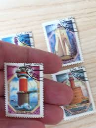 |
| eBay | ITALIENISCHE KOLONIEN SOMALIA 1932 177A * TADELLOS (I3723 | eBay | |
| Blogger.com | 2015 - The Spirit of ANZAC 1915 | |
| eBay UK | French Used Postal History Stamps for sale | eBay UK | |
| eBay | New Zealand 1947 Government Life Insurance FDC OY29-36 - Lighthouses & Booklet | eBay | |
| eBay | Postcard Philatelic Exhibition Puteaux 1947 | eBay | |
| France International at StampsByThemes.com | France International Unsold Lots Page 2 | |
| eBay | Greece booklet 1988 Capitals of prefectures part A | eBay | |
| eBay | NAPOLEON BONAPARTE MAISON NATALE FRANCE FEUILLET PHILATÉLIQUE CEF 107 A | eBay | |
| DealBid | Recently Listed Listings in Stamps > Asia - Page 5 of 22 - 40 items per page - Recently Listed | DealBid | |
| eBay | French Moroccan French & Colonies Cover Stamps for sale | eBay |